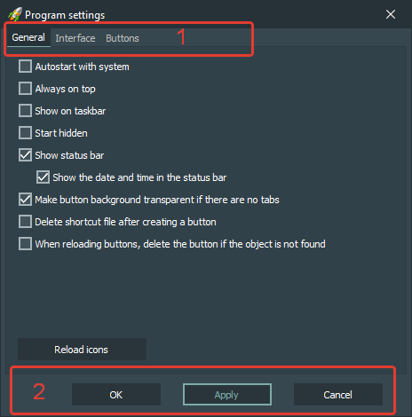

Interface elements:
-
Tabs
-
General
Basic application settings.
-
Interface
Application interface settings.
-
Buttons
Settings of button standard values.
-
Buttons
-
OK
Apply settings changes and close settings window.
-
Apply
Apply settings changes without closing settings window.
-
Cancel
Do not apply settings changes.
Hotkeys:
-
Alt + F4
Pressing this hotkey closes settings window without applying settings changes.
-
Enter
Pressing this hotkey applies settings changes without closing settings window.
-
Ctrl + Enter
Pressing this hotkey applies settings changes and closes settings window.
-
Esc
Pressing this hotkey closes settings window without applying settings changes.